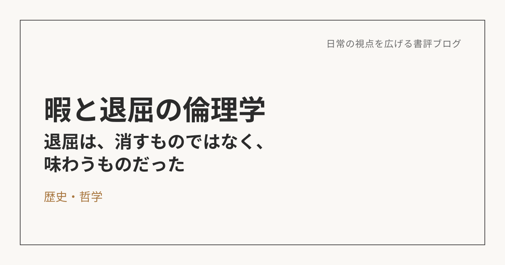

暇と退屈の倫理学――退屈は、消すものではなく、味わうものだった
この本について
國分功一郎が2011年に刊行した一冊で、後に新潮文庫として文庫化されてからも読み継がれている。中心にあるのは「暇とは何か」「人はいつから退屈するようになったのか」という素朴な問いだ。そこから、スピノザ、ルソー、ニーチェ、ハイデッガーといった時代も立場も異なる哲学者たちが、それぞれ退屈をどう論じてきたかを一つずつ辿っていく。単なる哲学史の紹介では終わらず、最終的には現代の消費社会のなかで、暇や気晴らしとどう付き合い、どう生きていくかという具体的な提案にまでたどり着く構成になっている。
退屈は、本当に「敵」なのか
もともと、退屈というのは「何もせず待っている時間」「時間を潰している時間」のことだと思っていた。でも読み進めるうちに、その境界がどんどん曖昧になっていった。
仕事をしている時間は、退屈じゃないと言い切れるのか。遊んでいる時間は、退屈じゃないと言い切れるのか。「それも結局は暇つぶしだ」と言われたら、正直、明確には否定できない自分がいる。「退屈な時間」と「充実した時間」を、そんなにはっきり分けられるものなんだろうか、という揺さぶりを受けた。
そこから、改めて人生の目的や意義について考えさせられた。もし日常のすべてが気晴らしだとするなら、逆に人生をかけて何かを成し遂げたいと思っている人は、退屈を感じないということになるのか。退屈しないためには、そういう大きな目標のようなものが必要なのだろうか、と。
でも、今の自分の結論としては、そこまで大きな「目標」は要らなくて、「こうありたい」という指針くらいがちょうどいい、というところに落ち着いた。仕事も、家族との時間も、突き詰めればある意味では気晴らしなのかもしれない。でも、その気晴らしの時間を精一杯味わいながら、いまを楽しむ。退屈をゼロにしようとするのではなく、退屈の中に楽しさを見出していく。そういう方向性の方が、自分の性分には合っている気がする。
「環世界」――見えている世界は、人によって違う
本書で初めて知った「環世界」という概念には、強い納得感があった。人間は他の生物に比べて、環世界を移動する能力が高いから退屈するのだという。生物によって、そもそも見えている世界がまったく違う。同じ場所にいても、そこで何を感知し、何を意味あるものとして受け取るかは、生き物の種類によってまるで違う、という話自体が新鮮だった。
そして、これは人間同士でも同じことが言えると思う。同じ人間であっても、それぞれが生きている「環世界」は違う。価値観の違いというのは、突き詰めれば、この環世界の違いなのかもしれない。
この考え方は、日々のコミュニケーションにもそのまま応用できる。目の前の相手は、どんな環世界を生きているのだろうか。見えている世界が違うということは、同じ出来事に対する捉え方も、認識も、当然ながら異なる。その前提が自分とは違う以上、まず「相手にはどう見えているのか」を理解することが、対話や説得よりも先に必要になる。自分の価値観をそのままぶつけても、それはただの一方通行になってしまう。
日常を、解像度高く味わって生きる
この本から日常に持ち帰りたいのは、自分の意識の中で起きるなるべく多くの事象――感覚、感情、行動、欲求――に対して、受け身の姿勢のままにしておくのではなく、解像度を高めて、自分なりにしっかり味わい、堪能し、吟味していくという姿勢だ。
これは、何かを消費するときも同じだと思う。なんとなく買う、なんとなく選ぶ、ではなく、自分自身がちゃんと納得できているかどうかを、その都度意識する。大げさに言えば、日常の些細なことに対しても、哲学し続ける、考え続ける、ということなのかもしれない。
退屈をなくそうと躍起になるのではなく、退屈も含めた日常のあらゆる瞬間に、自分から意識を向けていく。そうやって日々を過ごしていくことが、今の自分にとってはいちばんしっくりくる生き方なんだと思う。
※本記事はNotionに書き溜めた読書メモをもとに、AIの編集サポートを受けて構成しています。